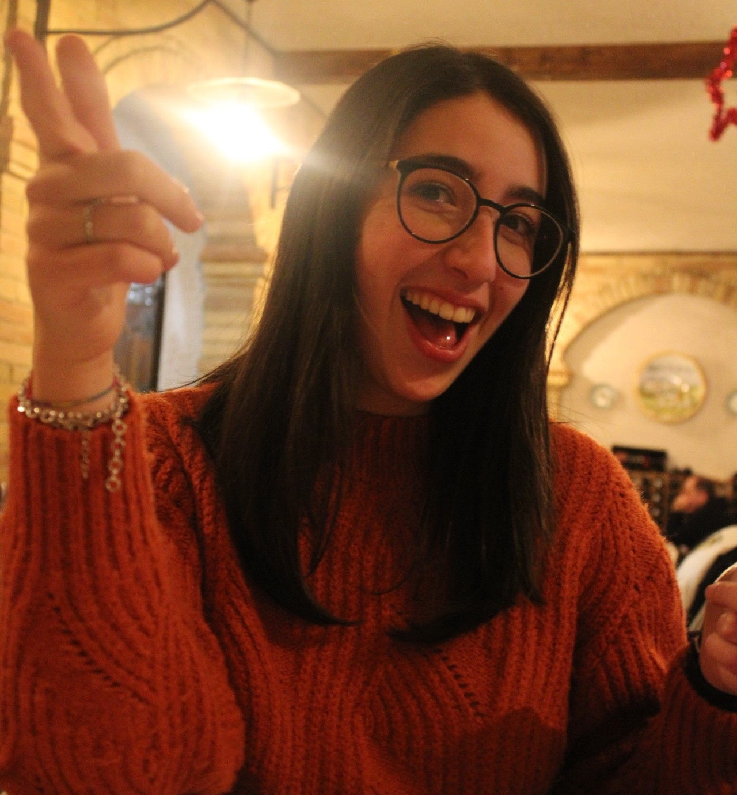

Ciao! Io sono Chiara D'Anniballe,
studio Nuove Tecnologie dell'Arte in Accademia di Belle Arti ad Urbino.
Le mie
competenze variano dall'ambito grafico, performativo a quello cinematografico.
Ho sviluppato la maggioranza dei lavori presenti in questo portfolio nel mio
percorso
in accademia, andando ad approfondire i campi che mi colpiscono
maggiormente:
quello cinematografico e fotografico.
Ho uno stile molto sobrio, caratterizzato dall'attenzione per i dettagli.
Essendo molto minuziosa e precisa cerco sempre di dare il massimo per ogni
singolo lavoro che mi si presenta davanti.
Accolgo ogni spunto di riflessione possibile, per cercare di aprire maggiormente
il mio repertorio personale e scoprire nuove cose, posti e persone.
Sono sempre disponibile alla collaborazione con altri artisti e non, per
uscire dalla mia comfort zone e creare qualcosa di diverso attraverso sopprattuto
il divertimento!

Tra le varie competenze che ho acquisito
e sto acquisendo, ci sono l'uso di programmi
mirati, studiati dettagliatamente in modo
professionale, per una buona riuscita del
prodotto finale.
Programmi con cui lavoro: